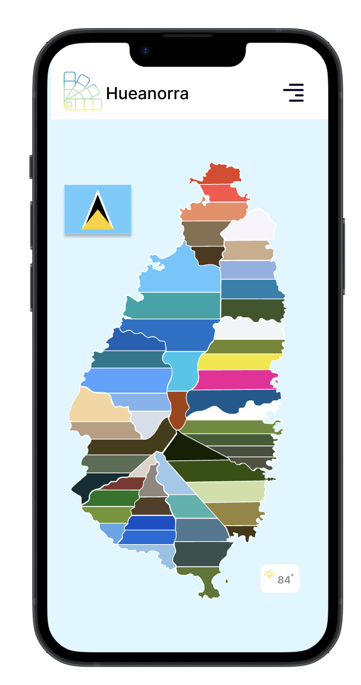
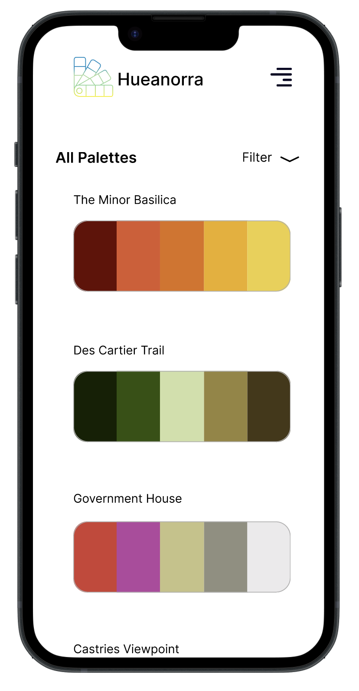
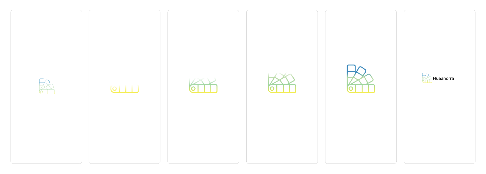
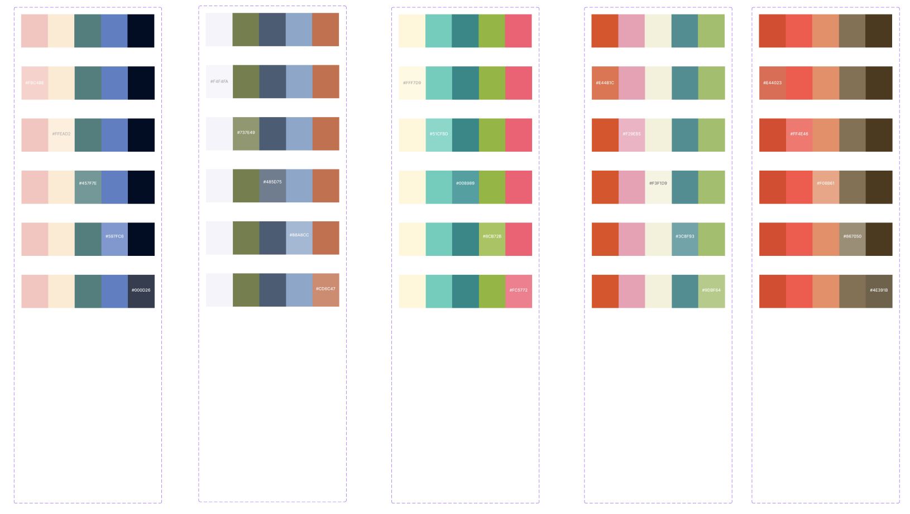

Hueanorra is a visually immersive travel app that guides users through the beauty of St. Lucia using color. Designed for tourists and locals alike, the app
blends aesthetics with functionality, offering curated experiences based on vibrant color palettes inspired by the island’s landmarks, nature, and culture.


< Research and Inspiration >
Saint Lucia is renowned for its vibrant culture, stunning natural landscapes, and rich history. With so much to explore, it can sometimes be overwhelming for tourists to
know where to begin. Inspired by the island’s colorful elements — from its tropical flora to the vibrant hues of its towns — the app uses color as a central theme to help users navigate and discover new experiences. The goal is to deliver a sensory experience that is both visually stimulating and informative.
< Key Features >
Color-Coded Navigation
The app uses color palettes associated with different locations or experiences. For example, the lush greenery of the Pitons could be represented with a palette of vibrant greens, while the beaches might feature soft blues and sandy tones. Each color palette corresponds to a specific area or theme, guiding users to relevant
landmarks, activities, and experiences.
Explore Landmarks and Sites
Users can click on specific colors representing landmarks like the Pitons, Sulphur Springs, or Diamond Waterfall.The app offers in-depth information about these places, including historical context, photos, and practical details
Discover Hotels and Experiences
The app provides recommendations for hotels and unique local experiences. Whether users are looking for a luxurious stay by the beach or a more eco-friendly option near the rainforest, the app helps tourists find accommodations that
match their preferences and surroundings.


< Process >
Research & Ideation
Market & User Research: Research other tourism apps, focusing on user pain points and features tourists appreciate. Gather feedback through surveys or user interviews to determine key features.
Explore Saint Lucia's Landmarks: Identify which landmarks, sites, hotels, and experiences should be included. Gather visuals and references to help shape the app's design direction.
Color Palette Research: Research color psychology to ensure the app’s color schemes enhance the travel experience and create emotional connections with the locations.
Conceptualization & Wireframing
User Flow Mapping: Develop a flowchart or mind map in Figma to outline how users will interact with the app (e.g., discovering regions by color palette, viewing landmarks, exploring experiences).
Wireframing: Start building low-fidelity wireframes for each screen of the app (Home, Color Palette Page, Map View, Landmark Pages, etc.). Focus on layout, interactions, and navigation without getting into details.
Key Features Identification: Define and illustrate features like interactive maps, color-coded location markers, region filters, and user-friendly navigation through wireframes.
High-Fidelity Design in Figma
Color Palette Application: Implement the selected color palette for each region or experience in the app. Choose colors that reflect the local atmosphere and align with the emotional tone of each location.
UI Elements Design: Design UI components like buttons, navigation bars, icons, and input fields.
Interactive Prototyping: Create a clickable prototype in Figma, allowing users to interact with the app. Focus on navigation, color transitions, and overall flow.
< Results >
< Future Improvements >
Future improvements for the "Hueanorra" app could include adding augmented reality (AR) features to create more interactive experiences with landmarks. It could also allow users to build personalized itineraries
based on their interests and color preferences, and integrate cultural and historical content for a deeper connection to the island. Weather forecasts could be linked to dynamic color themes, and offline access to maps and information could
be added for convenience. Social media integration would encourage users to share their experiences, while real-time event notifications could keep users updated on local happenings. Partnering with local businesses to offer exclusive discounts
would benefit both users and the community. Accessibility features like voice navigation and colorblind-friendly modes could be included, and allowing users to share their own photos and color interpretations would foster a community-driven aspect to the app.
These enhancements would ensure a more engaging and functional experience for users exploring Saint Lucia.